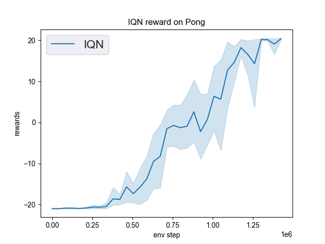
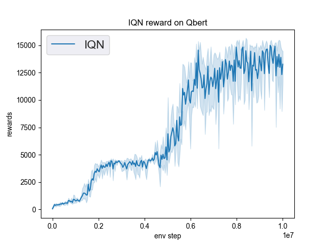
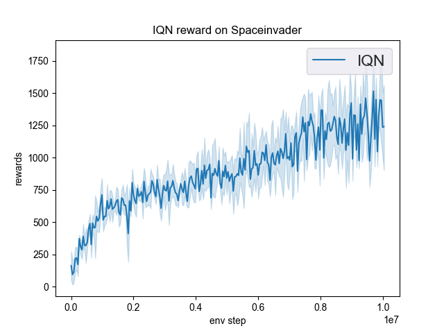

IQN¶
Overview¶
IQN was proposed in Implicit Quantile Networks for Distributional Reinforcement Learning. The key difference between IQN and QRDQN is that IQN introduces the implicit quantile network (IQN), a deterministic parametric function trained to re-parameterize samples from a base distribution, e.g. tau in U([0, 1]), to the respective quantile values of a target distribution, while QRDQN direct learns a fixed set of pre-defined quantiles.
Quick Facts¶
IQN is a model-free and value-based RL algorithm.
IQN only support discrete action spaces.
IQN is an off-policy algorithm.
Usually, IQN use eps-greedy or multinomial sample for exploration.
IQN can be equipped with RNN.
Key Equations¶
In implicit quantile networks, a sampled quantile tau is first encoded into an embedding vector via:
\[\phi_{j}(\tau):=\operatorname{ReLU}\left(\sum_{i=0}^{n-1} \cos (\pi i \tau) w_{i j}+b_{j}\right)\]
Then the quantile embedding is element-wise multiplied by the embedding of the observation of the environment, and the subsequent fully-connected layers map the resulted product vector to the respective quantile value.

Extensions¶
- IQN can be combined with:
PER (Prioritized Experience Replay)
Tip
Whether PER improves IQN depends on the task and the training strategy.
Multi-step TD-loss
Double (target) Network
RNN
Implementation¶
Tip
Our benchmark result of IQN uses the same hyper-parameters as DQN except the IQN’s exclusive hyper-parameter, the number of quantiles, which is empirically set as 32. The number of quantiles are not recommended to set larger than 64, which brings marginal gain and much more forward latency.
The default config of IQN is defined as follows:
- class ding.policy.iqn.IQNPolicy(cfg: dict, model: Optional[Union[type, torch.nn.modules.module.Module]] = None, enable_field: Optional[List[str]] = None)[source]
- Overview:
Policy class of IQN algorithm.
- Config:
ID
Symbol
Type
Default Value
Description
Other(Shape)
1
typestr
qrdqn
RL policy register name, refer toregistryPOLICY_REGISTRYthis arg is optional,a placeholder2
cudabool
False
Whether to use cuda for networkthis arg can be diff-erent from modes3
on_policybool
False
Whether the RL algorithm is on-policyor off-policy4
prioritybool
True
Whether use priority(PER)priority sample,update priority6
other.eps.startfloat
0.05
Start value for epsilon decay. It’ssmall because rainbow use noisy net.7
other.eps.endfloat
0.05
End value for epsilon decay.8
discount_factorfloat
0.97, [0.95, 0.999]
Reward’s future discount factor, aka.gammamay be 1 when sparsereward env9
nstepint
3, [3, 5]
N-step reward discount sum for targetq_value estimation10
learn.updateper_collectint
3
How many updates(iterations) to trainafter collector’s one collection. Onlyvalid in serial trainingthis args can be varyfrom envs. Bigger valmeans more off-policy11
learn.kappafloat
/
Threshold of Huber loss
The network interface IQN used is defined as follows:
- class ding.model.template.q_learning.IQN(obs_shape: Union[int, ding.utils.type_helper.SequenceType], action_shape: Union[int, ding.utils.type_helper.SequenceType], encoder_hidden_size_list: ding.utils.type_helper.SequenceType = [128, 128, 64], head_hidden_size: Optional[int] = None, head_layer_num: int = 1, num_quantiles: int = 32, quantile_embedding_size: int = 128, activation: Optional[torch.nn.modules.module.Module] = ReLU(), norm_type: Optional[str] = None)[source]
- forward(x: torch.Tensor) Dict[source]
- Overview:
Use encoded embedding tensor to predict IQN’s output. Parameter updates with IQN’s MLPs forward setup.
- Arguments:
- x (
torch.Tensor): The encoded embedding tensor with
(B, N=hidden_size).
- x (
- Returns:
- outputs (
Dict): Run with encoder and head. Return the result prediction dictionary.
- outputs (
- ReturnsKeys:
logit (
torch.Tensor): Logit tensor with same size as inputx.q (
torch.Tensor): Q valye tensor tensor of size(num_quantiles, N, B)quantiles (
torch.Tensor): quantiles tensor of size(quantile_embedding_size, 1)
- Shapes:
x (
torch.Tensor): \((B, N)\), where B is batch size and N is head_hidden_size.logit (
torch.FloatTensor): \((B, M)\), where M is action_shapequantiles (
torch.Tensor): \((P, 1)\), where P is quantile_embedding_size.
- Examples:
>>> model = IQN(64, 64) # arguments: 'obs_shape' and 'action_shape' >>> inputs = torch.randn(4, 64) >>> outputs = model(inputs) >>> assert isinstance(outputs, dict) >>> assert outputs['logit'].shape == torch.Size([4, 64]) >>> # default num_quantiles: int = 32 >>> assert outputs['q'].shape == torch.Size([32, 4, 64] >>> # default quantile_embedding_size: int = 128 >>> assert outputs['quantiles'].shape == torch.Size([128, 1])
The bellman updates of IQN used is defined in the function iqn_nstep_td_error of ding/rl_utils/td.py.
Benchmark¶
environment |
best mean reward |
evaluation results |
config link |
comparison |
|---|---|---|---|---|
Pong (PongNoFrameskip-v4) |
20 |
 | Tianshou(20) |
|
Qbert (QbertNoFrameskip-v4) |
16331 |
 | Tianshou(15520) |
|
SpaceInvaders (SpaceInvadersNoFrame skip-v4) |
1493 |
 | Tianshou(1370) |
- P.S.:
The above results are obtained by running the same configuration on five different random seeds (0, 1, 2, 3, 4).
References¶
(IQN) Will Dabney, Georg Ostrovski, David Silver, Rémi Munos: “Implicit Quantile Networks for Distributional Reinforcement Learning”, 2018; arXiv:1806.06923. https://arxiv.org/pdf/1806.06923